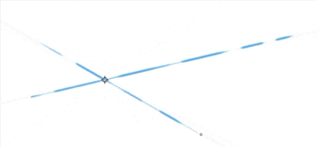

A ruler that keeps your brush. Tap to set an anchor, move the pointer away and paint toward it: the stroke stays on the straight line between where you started and the anchor, with pressure, tilt and texture intact. Inspired by the excellent ruler tool in Rebelle.

Esc clears the anchor. Strokes with Ctrl, Shift, Alt or Space held behave normally, so colour picking, brush resizing and panning still work.
Designed by a human, built by a machine.